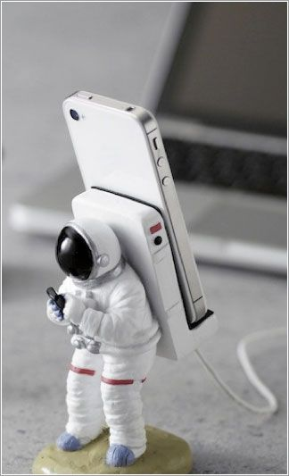

Desde que comencé mi viaje como diseñador independiente hace más de 11
años, he realizado trabajos remotos para agencias, asesorado para nuevas
empresas y colaborado con personas talentosas para crear productos digitales
para uso comercial y de consumo. Soy tranquilamente confiado, naturalmente
curioso y trabajo perpetuamente para mejorar mis habilidades, un problema
de diseño a la vez.

Valoro la estructura de contenido
simple, los patrones de diseño limpios
y las interacciones bien pensadas.
Cosas que disfruto diseñando:
UX, UI, web, aplicaciones, logotipos
Herramientas de diseño:
Diseñador de afinidad
figma
fuente impresionante
pluma y papel
Bosquejo
Flujo web
Me gusta codificar cosas desde cero y
disfruto dando vida a las ideas en el
navegador.
Idiomas que hablo:
HTML, Pug, Delgado, CSS, Sass, Git
Herramientas de desarrollo:
Átomo
Bitbucket
Oreja
Bulma
Juego de códigos
Github
Sobretensión
Terminal
Vercel
Realmente me preocupo por las
personas y me encanta ayudar a otros
diseñadores a trabajar en su oficio.
Experiencias que traigo de:
UX/UI, Diseño de producto, Freelance
Estadísticas del mentor:
7 años de experiencia
26 cursos cortos
65 campamentos de entrenamiento
200+ estudiantes
Más de 2350 sesiones de tutoría
Más de 60 críticas grupales
16,500+ comentarios
Mi trabajo reciente
Aquí hay algunos proyectos de diseño anteriores en los que he trabajado. ¿Quieres ver más? Envíame un correo electrónico .


Estoy orgulloso de haber colaborado con
algunas compañías increíbles:


Mis proyectos
Soy un poco adicto a los productos digitales. A lo largo de los años, he usado
cientos de aplicaciones web y móviles en diferentes industrias y verticales.
Eventualmente, decidí que sería un desafío divertido intentar diseñar y
construir el mío propio.

Un backend de formulario potente
y fácil de configurar para diseñadores y
desarrolladores.

Colaboraciones cortas y enfocadas de
diseño y crecimiento para fundadores
de tecnología de inicio.

Solución de API inteligente para la
protección automática contra correo no
deseado sin el trabajo manual.

Una plataforma de publicación de
contenido amigable para las personas
que se integra con cualquier pila
tecnológica.

Sistemas de chasis plug and play de
siguiente nivel para construcciones
personalizadas de sables de luz de
bricolaje.

Herramientas simples de retroalimentación y compromiso que ayudan a los equipos a enviar productos ganadores.
idea validadoraLogotipos creados por humanos y activos de marca para nuevas empresas y proyectos independientes de hackers.
idea validadora
Una herramienta colaborativa para crear personajes de usuario simples y efectivos.
adquirido en 2016Siempre estoy abierto a discutir el trabajo de diseño de productos o las oportunidades de asociación.
Las personas con las que he trabajado han dicho algunas cosas bonitas...
“Fue un verdadero placer trabajar con Matt y esperamos volver a
trabajar con él. Definitivamente es el tipo de diseñador en el que
puedes confiar con un proyecto de principio a fin”.
pascal tremblay
Líder creativo, buen tipo
Iniciar un proyecto
¿Interesado en trabajar juntos? Deberíamos
hacer cola para charlar. Compraré el café.
Viviendo, aprendiendo y
subiendo de nivel un día a la
vez.